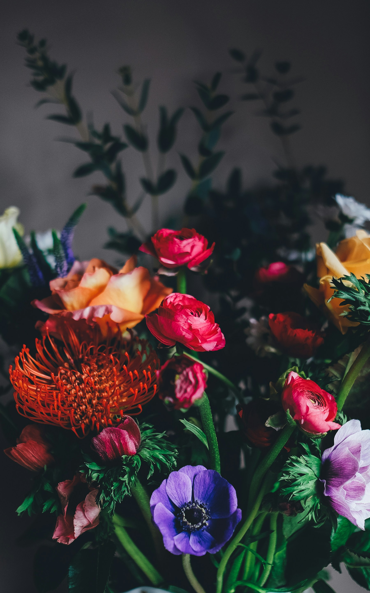

For the love of flowers
A little closer
to nature.
For the windowsill gardeners. The Sunday flower buyers. The ones who always stop to smell the roses.
Explore the flower guideA little curiosity.
A whole world in bloom.

of beautiful
Meet your next favorite
So many ways to bloom.
Some steal the show. Others whisper.
Get to know the flowers that make you pause.
Bloom times vary by variety and climate. Follow your local season.
Small rituals, longer blooms
A little care
goes a long way.
A fresh bunch, a favorite vase, and a few quiet minutes. Here’s how to make the most of them.
01 Give them a fresh start +
Use a clean vase and fresh water. Trim the stems with clean, sharp scissors before placing your flowers in water.
02 Keep the water clear +
Remove any leaves below the waterline. Refresh the water regularly and clean the vase when it starts to look cloudy.
03 Find their happy place +
Keep your arrangement in a cool spot away from direct sunlight, heaters, and ripening fruit. Remove faded blooms as they finish.
The Petal & Stem philosophy
You don’t need a garden
to have a floral life.
Just a single stem on your desk. A wildflower spotted on a walk.
We’re here for the small things that bring the outside in.